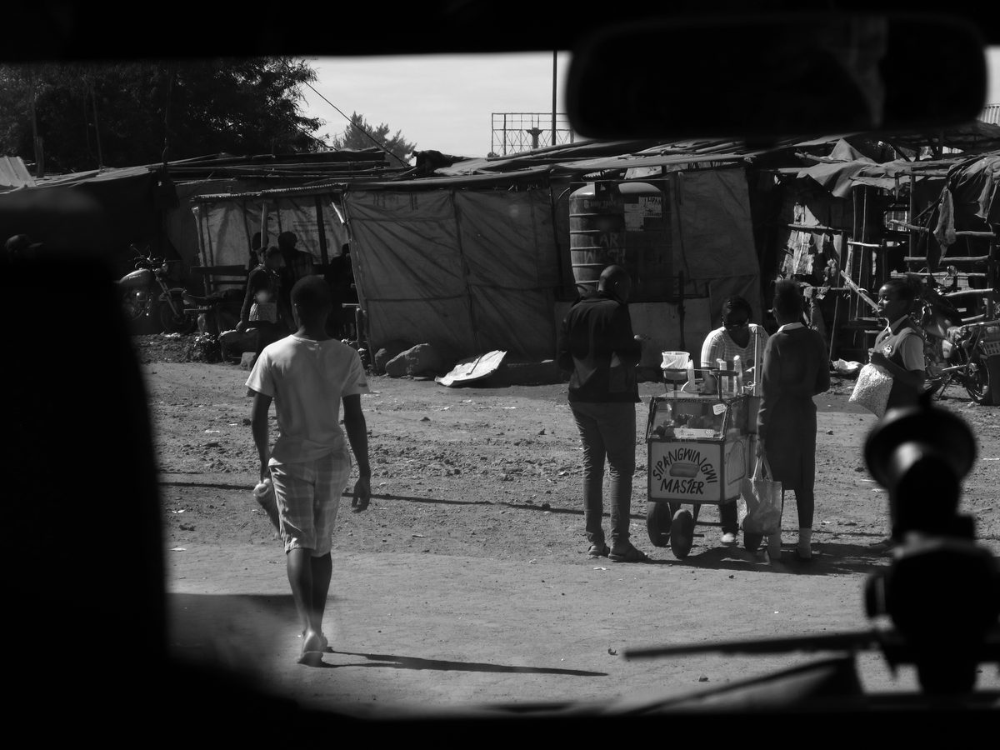

简介
2025 年 8 月，我离开熟悉的陆地，去往肯尼亚与坦桑尼亚，去往一片在人类想象中既古老又年轻的土地。那不是一次普通意义上的旅行，更像是一场迟到已久的回返。仿佛在某个难以言说的时刻之前，我们都曾从那里出发，沿着火、河流、兽骨、星辰与迁徙的方向，慢慢走到了世界各处；而如今，我不过是循着血液深处一缕微弱却执拗的召唤，再次踏上那片被称作文明初始之地的原野。在这片土地上，生命并不以人类为中心展开，草原、裂谷、湖泊与火山，从来就不是旅游叙事中被反复消费的“野性奇观”。它更像一部没有被写完的古老史诗，一部用风、兽群、尘土和沉默讲述的书。人在那里站立，会忽然明白自己的身体从来不是世界的尺度，而只是世界之中的一粒尘埃，一次短暂呼吸，一个匆匆经过的见证者。
我带着现代机械相机进入那片大地时，并不以为自己有权解释什么。我只是试着观看，并在观看中承认自己的有限。因为在那片土地上，真正古老的不是遗迹，而是生存本身；真正深邃的不是风景，而是万物彼此相连却又彼此警惕的秩序。斑马身上的黑白条纹像白昼与黑夜曾经订立的盟约，角马与羚羊沿着尘土弥漫的道路迁徙，秃鹫在高空盘旋，像死亡派出的使者，狮子伏卧在高草中，耐心地等待一个时机，而河流在看似平静的时候，也藏着最突然的吞噬。这些生灵仿佛在履行一种比国家、语言与历法更早的法则。于是，草原上的每一次奔跑、每一次潜伏、每一次围猎与逃生，最终都变成了关于命运、恐惧、欲望、勇气与秩序的隐秘寓言。然而，非洲东部并不只有动物。若只把它理解为野生王国，便是另一种温柔而傲慢的误读。那些披着鲜艳织毯、佩戴珠饰的人们，那些在风中站立的身体，那些与土地、牲畜、祖辈和神灵共同建构栖居之所的人们，同样是这部史诗不可被删去的篇章。马赛人的存在是一种时间的方式：他们如何注视远方，如何命名山川，如何在祝福中把雨水、牛群、孩子与群山联系在一起，如何在贫瘠与丰饶交替出现的世界里，把生活维持为一种庄严的延续。站在他们的村落边缘，我常常感到，所谓“现代”似乎并不能赋予人更高明的智慧。城市让我们更快，却未必更接近生命；技术让我们看得更远，却未必更懂得如何与土地共处。那些古老民族所保留的不只是风俗，而是一种尚未被彻底切断的世界关系。
可是，这片土地的故事也并不纯粹明亮。每一道地平线后面，都潜伏着历史留下的阴影。殖民统治曾像一把迟钝却持久的刀，割裂过土地、语言、部落与记忆；它改变了边界，也改变了人如何看待自己，如何看待他者，如何被世界观看。直到今天，那些伤痕仍然以不易察觉却真实存在的方式延续着：在贫富的不均里，在资源被攫取的痕迹里，在某些被神化的风景背后被遮蔽的人群生活里，也在我们这些外来者的注视方式里。摄影从来不是无辜的。每一次举起相机，都意味着一种权力关系的生成：谁在看，谁被看；谁有资格讲述，谁又被固定成沉默的对象。在这里，神话从来不是虚构。马拉河不只是河流，它是一条通往天界与命运的“天河”；湖泊不只是水面，它倒映着神灵、死亡与迁徙者疲惫的身影。非洲的神话感恰恰就来自于现实本身的过于辽阔。当天空压低，暴雨从远方移动而来，闪电照亮成群的角马与斑马，风卷起灰尘，群鸟突然从湿地惊飞，人会感到那不是简单的景象，而像某种古老意志正在显形。
我愿把这一部影像诗歌献给那片土地上的风、尘、火、河流与沉默，献给每一只在晨雾中现身又消失的动物，献给每一个曾与我短暂对视的人，也献给那些比人类社会更古老的法则。风吹过草梢，兽群碾过大地，河水穿过石头，远处传来人的歌声与祝福，而我的心脏也在其中缓缓应和。仿佛从很久以前开始，草原的赞歌就已经在我体内回荡；仿佛直到踏上非洲东部，我才第一次真正听清，那不是遥远大陆发出的声音，而是生命本身低沉而古老的心跳。